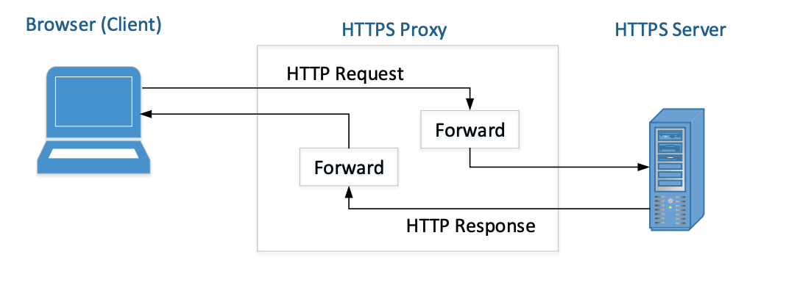

TLS, Transport Layer Security, is a standard that allows different applications to communicate with one another securely through the internet. Most web servers these days are using HTTPS, which is built on top of TLS.
Please download and unzip Labsetup.zip files in your SEED VM. Enter the Labsetup folder, and use the docker-compose.yml file to set up the lab environment.
Take screenshots of your code snippets and important results and explain what you see.
TLS handshake
Before a client and a server can communicate securely, several things need to be set up first, including what encryption algorithm and key will be used, what MAC algorithm will be used, what algorithm should be used for the key exchange, etc. These cryptographic parameters need to be agreed upon by the client and the server. That is the primary purpose of the TLS Handshake Protocol.
On the client container, navigate to the volumes folder and run handshake.py code to communicate with a real HTTPS-based web server (e.g. www.bcit.ca (TLS v1.2 or www.google.com TLSv1.3), the address of the server needs to be specified as the command-line argument for the python code.
A Simple HTTPS Proxy
TLS can protect against the Man-In-The-Middle attack, but only if the underlying public-key infrastructure is secured. In this task, we will demonstrate the Man-In-The-Middle attack against TLS servers if the PKI infrastructure is compromised, i.e., some trusted CA is compromised or the server’s private key is stolen.
We will implement a simple HTTPS proxy which is actually a combination of the TLS client and server programs. To the browser, the TLS proxy is just a server program, which takes the HTTP requests from the browser (the client) and returns HTTP responses to it. The proxy does not generate any HTTP responses; instead, it forwards the HTTP requests to the actual web server and then gets the HTTP responses from the webserver. To the actual web server, the TLS proxy is just a client program. After getting the response, the proxy forwards the response to the browser, the real client.

Note that a company can also use such proxy to decrypt and inspect the encrypted information going in/out (TLS Inspection). This is basically a man-in-the-middle attack against their own user!
BONUS: Repeat these steps to intercept data with a website that requires login, and then use your MITM proxy to steal the password. Many popular servers, such as facebook, have complicated login mechanisms, so feel free to find a server that has simple login mechanisms. Please remember to hide your password in your lab report if you are using a real password.